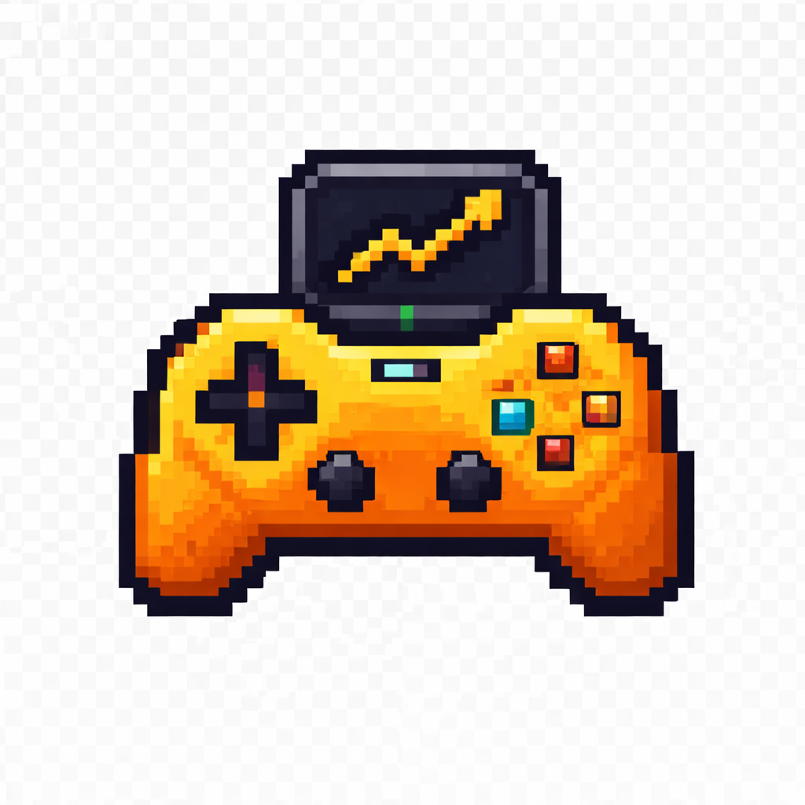
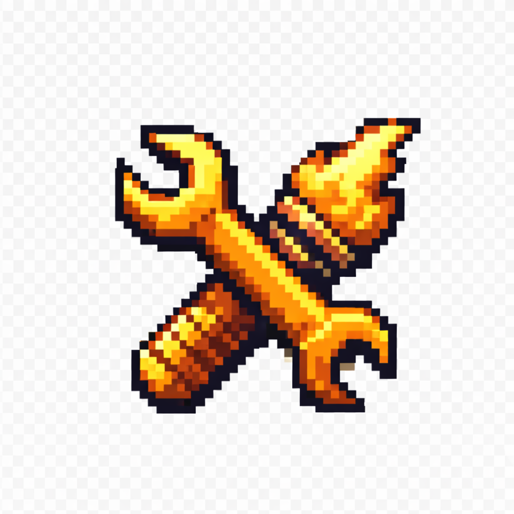
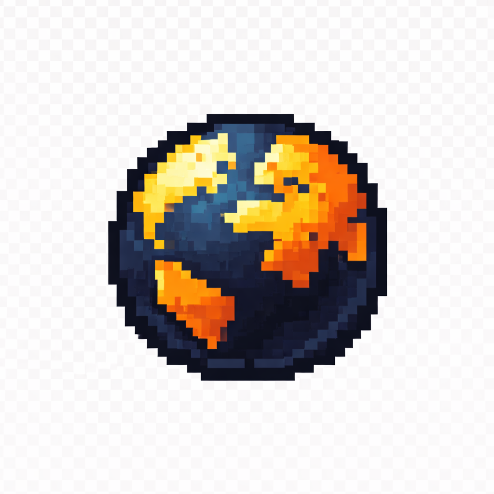

El ritmo no es velocidad: es claridad
Cómo evitar que “más contenido” se vuelva ruido y fatiga.
Leer → Diego Laverde
Análisis • Game Design • Altherion
Saltar al contenido
Diego Laverde
Análisis • Game Design • Altherion
Saltar al contenido
Convierto experiencias en decisiones claras: qué funciona, por qué funciona, y cómo aplicarlo en proyectos reales.
Tres líneas de trabajo. Un solo enfoque: decisiones útiles.

Desarmo juegos a nivel de estructura: ritmo, progresión, feedback, economía de decisiones y lectura del jugador.
Ver destacados →
Trabajo desde prototipo hasta vertical slice: reglas, loops, balance, UX de gameplay y documentación lista para equipo.
Ver destacados →
Construyo universos con coherencia: tono, historia, símbolos y reglas internas que sostienen gameplay y narrativa.
Ver destacados →Curado. Poco. De calidad.
Estructura, ritmo y progresión. Enfoque 100% aplicable a diseño.
Leer →Diseño de niveles, loop de exploración, combate y puzzles.
Ver →Fuego vivo, decisiones morales y rutas narrativas con coherencia interna.
Explorar →Micro-ideas accionables. No reseñas. No humo.
Si estás desarrollando un juego y necesitas criterio de diseño (no solo opiniones), escríbeme.